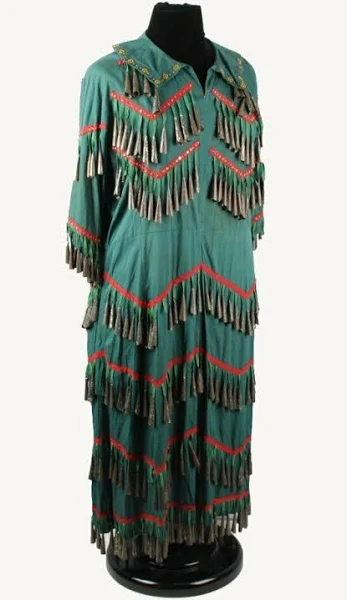
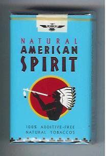
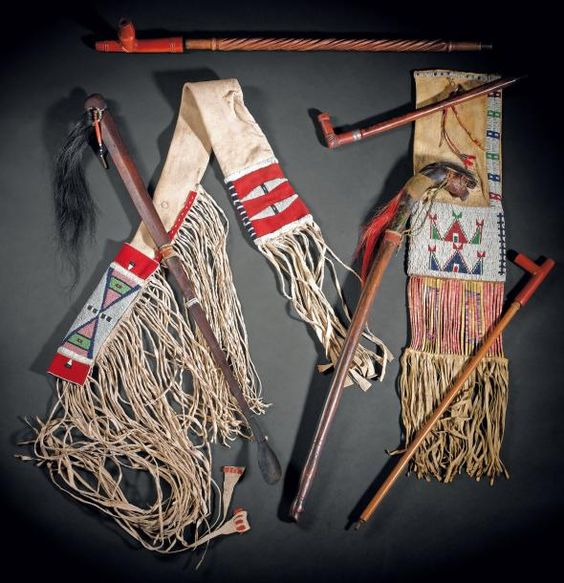

Four Directions Shaman's Rawhide Rattle, Horse, Deer or Buffalo with Horsehair, Ceremony, Ritual, Sound Healing, Meditation, Journey
list price: $77.00
our price: $75.00
you save: $2.00
Product Description:
Made in honor of the Lakota people and their decision to share their knowledge with the world, this large rattle has sinew in the four sacred colors of the Lakota: Red, Yellow, Black and White. Black and white horsehair decorate the top, which has a band of blue deer suede to represent Father Sky, while the band around the base is green to represent Mother Earth. This rattle can be made in deer, buffalo or horse (shown). The rattle is filled with corn and contains sage for pure energy. Average length is about 14" but can be made any length.
If you have different four direction colors in your tradition, let me know and I will use them for your rattle.
2.
availability: SOLD OUT
Jack Daniels
list price: $8.00
our price: $6.00
you save: $2.00
Product Description:
Cleans wounds and soothes souls.
3.

availability: 1
Vintage Native American Indian Jingle Dress (attributed To Annie Oakley)
list price: $18,850.00
our price: $17,790.75
you save: $1,059.25
Product Description:
Women—Regular. Howdy folks! Presented is an antique Native American Indian jingle dress from the early 1990s. The jingle dress is traditionally used for pow wows. While the woman dances, the multiple rows of decorative metal cones create a jingling type sound.
This dress was attributed to America’s first superstar, Annie Oakley. The attribution was made because of the provenance and timeline. The dress originated from a former sharp-shooter’s collection. He was a tri-athlete who won awards for his sharp shooting skills and met Annie Oakley through this association.
Oakley’s sharpshooting skills and showmanship was revered around the world. Her talent made her not only a pioneer in entertainment but (gosh, darn it) a woman doing well as an inspiration for others.
She was born Phoebe Ann Moses and developed her well known stage name after a Cincinnati neighborhood. Early on in life, she suffered hardship as both her father and stepfather died when she was a child.
Shortly thereafter, Oakley and her husband Frank Butler joined the Four-Pauw and Sells Brothers Circus in 1880 as a shooting act. They met the great Sioux Indian Chief Sitting Bull in St. Paul, Min, in 1882, at which time Annie was adopted into the tribe as “Mochin Chilla Wytonys Cecilia,” which is the Sioux Indian name for “My Daughter, Little Sure Shot.” Two years later they joined Buffalo Bill’s Wild West Show. This association with Sitting Bull, Medicine Man, and the Annie Oakley’s Jingle dress is imperatively impressed upon us.
The forest green dress which is quite heavy is made from hundreds of small rolled Copenhagen tobacco tin (silver coated) cones. The silver was tested. It was highlighted by adding small golden accents on the collar with red striping. The history of the dress had healing abilities. The dresses were traditionally made from Copenhagen tobacco tin lids, sewn into rows on the dresses. It makes a beautiful loud “swishing – clanging – chime” noise.
Although Annie was known to dress more in a “grandmotherly” fashion, through her association with the Sioux Indians and Sitting Bull, the leap of owning and wearing a Jingle dress is possible. She also single-handedly saved Buffalo Bills show.
The dress is not too long for a woman 5 ft tall. However, it would have to accommodate the side-saddle type style of riding Annie rode. It could be cinched at the waist with a belt, blousing the top, over the skirted bottom. This dress measures 44-1/2″ from the top of the shoulder to the hem line at the bottom which would work for her frame.
The attractive dress was examined by several experts in the field of Native American history and dress. They determined it was indeed authentic to the time period of the early 1900s. Also due to the materials not being buckskin, it was also determined to be very possible for the style to be worn in a “Wild Bill” show.
100% Authentic Team
4.
availability: 200
Pack of 100 adult jingle dress jingles—silver
list price: $10.00
our price: $8.0
you save: $2.00
Product Description:
If you're indigenous, you probably know how to make your own jingle dress. If you don't know, get your aunty to show you.
5.

availability: 178
Natural American Spirit Cigarettes
list price: $8.35
our price: $5.00
you save: $3.35
Product Description:
Pack of Natural American Spirit Cigarettes. Prayers up, tobacco down.
5.

availability: SOLD OUT
Wichasha Wakan Starter Pack
list price: $184.95
our price: $180.00
you save: $4.95
Product Description:
Wichasha Wakan Starter Pack is a real steal. Includes three chanunpas, hand beaded leather pipebags, and 2 spirit sticks. Priced to move so act fast.